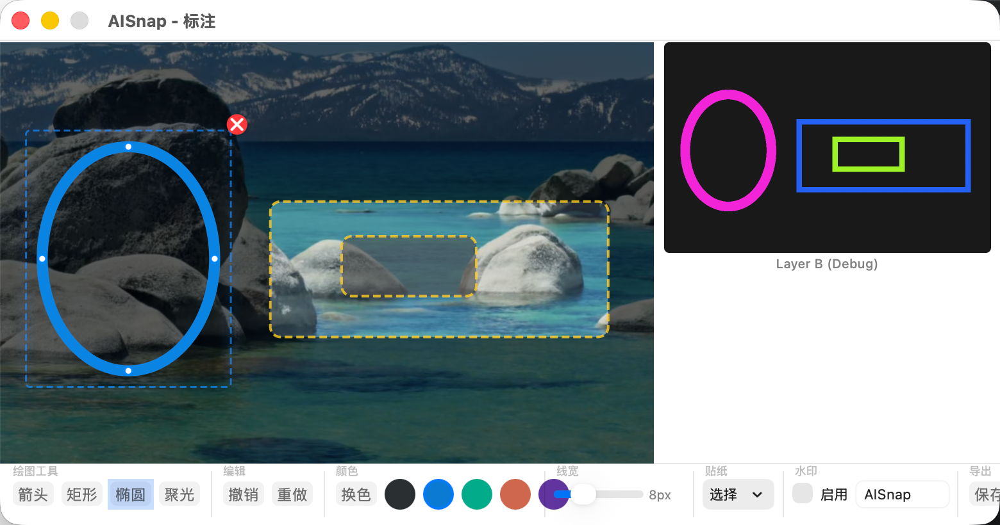

AISnap 设计文档
macOS 截图标注工具 — 支持区域截图、窗口截图，以及在截图上绘制可移动的箭头标注
1. 系统概览
技术栈
| 项目 | 选型 |
|---|---|
| 语言 | Swift 5.9 |
| UI 框架 | AppKit (NSView / NSWindow) |
| 构建系统 | Swift Package Manager |
| 最低版本 | macOS 13 (Ventura) |
| 截图 API | CGWindowListCreateImage |
- 需要精确控制鼠标事件 (mouseDown / mouseDragged / mouseUp)
- 需要直接操作 CGContext 进行像素级渲染
- 需要创建特殊窗口类型 (无边框全屏覆盖层)
- SwiftUI 在底层图形交互场景中控制力不足
2. 项目结构
ai-snap/
├── Package.swift # SPM 配置
└── Sources/
├── main.swift # 应用入口
├── AppDelegate.swift # 应用生命周期 + 菜单栏
├── Models.swift # 数据模型 (Arrow, CanvasState)
├── HitTestBuffer.swift # 隐藏图层 (Layer B) 实现
├── ScreenCapture.swift # 屏幕捕获 (区域/窗口)
├── RegionSelectionWindow.swift # 全屏覆盖选区窗口
├── AnnotationView.swift # 标注画布 (核心)
└── AnnotationWindow.swift # 标注窗口 + 工具栏模块职责
| 文件 | 职责 | 依赖 |
|---|---|---|
main.swift | NSApplication 启动引导 | AppDelegate |
AppDelegate | 菜单栏图标、截图流程调度 | RegionSelectionWindow, ScreenCapture, AnnotationWindow |
Models | Arrow 数据结构、CanvasState 状态枚举 | 无 |
HitTestBuffer | 离屏位图缓冲区，Color Picking 命中检测 | Models |
ScreenCapture | CGWindowList API 封装 | 无 |
RegionSelectionWindow | 全屏半透明覆盖层 + 拖拽选区 | ScreenCapture |
AnnotationView | 双图层画布渲染、鼠标交互、箭头绘制/移动 | Models, HitTestBuffer |
AnnotationWindow | 窗口容器、工具栏 (颜色/保存/复制) | AnnotationView |
3. 核心设计: 双图层 Color Picking
这是本项目的核心架构决策，用于解决"如何判断用户点击了哪个箭头"的命中检测 (Hit Test) 问题。

3.1 传统方案 vs 双图层方案
| 几何计算方案 | 双图层 Color Picking 本项目采用 | |
|---|---|---|
| Hit Test 复杂度 | O(n)，每种形状需专门计算 | O(1)，读像素 + Map 查找 |
| 新增形状成本 | 需写新的几何判定代码 | 零，画上去就行 |
| 精确度 | 近似 (tolerance) | 像素级精确 |
| 内存 | 无额外开销 | 多一个同尺寸 bitmap |
| 抗锯齿 | 无限制 | Layer B 必须关闭 |
3.2 三层架构
Layer O — 原始截图 (NSImage): 截图完成后不再修改，每次重绘时作为底图绘制到 Layer A。
Layer A — 用户可见的显示层 (NSView.draw): 每帧完整重绘 Layer O + 所有箭头 (用户选择的颜色)，包含选中高亮、绘制预览等视觉反馈。
Layer B — 隐藏的命中检测层 (CGContext 离屏位图): 与 Layer A 同尺寸，同样的箭头形状但使用唯一颜色绘制。必须关闭抗锯齿，线宽比 Layer A 粗 6pt 增大可选中区域。

每个图形对象在 Layer B 中使用唯一的亮色绘制，鼠标点击时读取 Layer B 对应位置的像素即可 O(1) 完成命中检测。
3.3 数据结构
// 箭头存储: Map<唯一颜色Key, Arrow>
var arrows: [UInt32: Arrow] = [:]用 UInt32 作为 key，对应 RGB 24 位颜色值 (忽略 Alpha):
key = (R << 16) | (G << 8) | B
key 0 = #000000 → 保留给背景，代表"无对象"
key 1 = #000001 → 第 1 个箭头
key 2 = #000002 → 第 2 个箭头
...
key 16777215 = #FFFFFF → 理论上限约 1600 万个对象3.4 命中检测流程
像素读取直接操作内存指针，无 GPU 回读开销:
let ptr = data.assumingMemoryBound(to: UInt8.self)
let offset = y * bytesPerRow + x * 4
let r = UInt32(ptr[offset])
let g = UInt32(ptr[offset + 1])
let b = UInt32(ptr[offset + 2])
let colorKey = (r << 16) | (g << 8) | b3.5 关键约束: Layer B 必须关闭抗锯齿
context.setShouldAntialias(false)
context.setAllowsAntialiasing(false)如果开启抗锯齿，箭头边缘像素会被混合成中间色。例如箭头颜色 #000001 和背景 #000000 之间会出现渐变像素，这些中间色在 Map 中不存在对应条目，导致边缘区域无法选中。
关闭抗锯齿后，每个像素非此即彼 — 要么是箭头颜色，要么是背景色。
4. 箭头数据模型
struct Arrow {
let id: UUID // 唯一标识
var startPoint: CGPoint // 箭尾坐标
var endPoint: CGPoint // 箭头坐标
var color: NSColor // 用户可见的颜色
var lineWidth: CGFloat // 线宽 (默认 3.0)
let hitTestColorKey: UInt32 // Layer B 中的唯一颜色 key
}绘制方法 Arrow.draw(in:withColor:lineWidthOverride:) 同时服务于 Layer A 和 Layer B:
- Layer A 调用: 使用用户选择的颜色
- Layer B 调用: 传入
overrideColor为唯一颜色，lineWidthOverride为加粗线宽
箭头的视觉组成:
- 箭身: startPoint → endPoint 的直线段
- 箭头: endPoint 处的三角形 (张角 30°，长度 14pt)
5. 状态机
画布交互使用三状态状态机:
enum CanvasState {
case idle
case drawing(start: CGPoint)
case moving(colorKey: UInt32, grabOffset: CGVector)
}5.1 moving 状态中的 grabOffset
移动箭头时记录 grabOffset (鼠标按下位置相对箭头中心的偏移量)。作用: 避免箭头"跳到"鼠标位置，箭头从按下的位置平滑跟随移动。
鼠标按下时:
center = (startPoint + endPoint) / 2
grabOffset = mousePosition - center
鼠标拖动时:
newCenter = mousePosition - grabOffset
delta = newCenter - oldCenter
startPoint += delta
endPoint += delta6. 截图捕获
6.1 区域截图流程
按 Escape 键可取消区域选择。
6.2 窗口截图流程
6.3 坐标系说明
- AppKit (NSView/NSEvent): 原点在左下角，Y 轴向上
- Core Graphics (CGWindowList): 原点在左上角，Y 轴向下
转换公式: cgY = screenHeight - nsY - rectHeight
7. 标注窗口
| 控件 | 功能 |
|---|---|
| 颜色按钮 (红/蓝/绿/黄) | 切换后续箭头的绘制颜色 |
| 保存 | NSSavePanel → 导出 PNG |
| 复制 | 合成图片 → 写入系统剪贴板 |
导出时调用 AnnotationView.compositeImage(): 绘制 Layer O + 所有箭头 (用户颜色)。Layer B 不参与导出。
8. 渲染管线
每次 needsDisplay = true 触发的 draw(_:) 调用:
Layer B 在以下时机重绘:
- 新箭头创建后:
hitTestBuffer.drawArrow(arrow)增量 - 箭头移动后:
hitTestBuffer.redrawAll(arrows:)全量 - 箭头删除后:
hitTestBuffer.redrawAll(arrows:)全量
性能说明: 截图标注场景中箭头数量通常 < 20 个，全量重绘无性能问题。
9. 键盘交互
| 按键 | 场景 | 行为 |
|---|---|---|
| Escape | 区域选择阶段 | 取消选区，关闭覆盖窗口 |
| Delete / Forward Delete | 标注阶段，有选中箭头 | 从 Map 中删除箭头，重绘 A/B |
10. 权限要求
应用需要屏幕录制权限才能正常截图。
- 位置: 系统设置 → 隐私与安全 → 屏幕录制
- 首次调用
CGWindowListCreateImage时系统会弹出授权请求 - 未授权时截图结果为空白图片
11. 构建与运行
# 构建
swift build
# 运行
swift run AISnap
# Release 构建 + 打包 DMG
./build.sh运行后应用以菜单栏图标形式存在 (无 Dock 图标)，通过 NSApp.setActivationPolicy(.accessory) 实现。
12. 扩展性分析
双图层 Color Picking 方案的最大优势是扩展成本极低:
| 新增图形类型 | 需要做的事 |
|---|---|
| 矩形 | 1. 新增模型 2. 实现 draw 方法 3. 画到 Layer A 和 B 上 |
| 圆形 | 同上 |
| 文字框 | 同上 |
| 自由画笔 | 同上 |
所有图形类型共享同一套命中检测逻辑 — 读像素 + Map 查找，无需编写任何新的几何计算代码。
Map 的 key 空间 (24 位 RGB = 约 1600 万种颜色) 对标注工具而言完全够用。
13. Layer B 调试可视化
问题: Layer B 肉眼不可见
Layer B 的颜色编码方式决定了它在视觉上几乎全黑 — #000001, #000002 等颜色亮度差异仅 1/255，人眼完全无法区分。
解决方案: 黄金比例色相放大
用相同的 drawHitTest() 方法重新绘制 Layer B 的内容，但将每个对象的颜色映射到人眼可区分的明亮色彩。使用黄金比例 (0.618034...) 作为色相步进值，保证无论对象数量多少，相邻对象的颜色差异始终最大化。
对象 1: hue = 1 * 0.618 = 0.618 (偏蓝)
对象 2: hue = 2 * 0.618 = 0.236 (偏黄绿)
对象 3: hue = 3 * 0.618 = 0.854 (偏紫)
对象 4: hue = 4 * 0.618 = 0.472 (偏青)Layer A vs Layer B 对比
| 观察项 | Layer A (左) | Layer B 可视化 (右) |
|---|---|---|
| 颜色 | 用户选择的颜色 | 每个对象一种亮色 |
| 线宽 | 原始线宽 | 线宽 + 6pt (更粗) |
| 抗锯齿 | 开启 (边缘平滑) | 关闭 (边缘锯齿状) |
| 空心形状 | 只有描边 | 只有描边 (可穿透内部) |
| 选中手柄 | 显示蓝色圆点 | 不显示 (纯形状) |
旋转后的命中区域自动正确，因为它就是像素 — 不需要任何数学变换。这是双图层方案最精妙的地方: 把几何问题转化为像素问题，让光栅化替你完成所有数学计算。